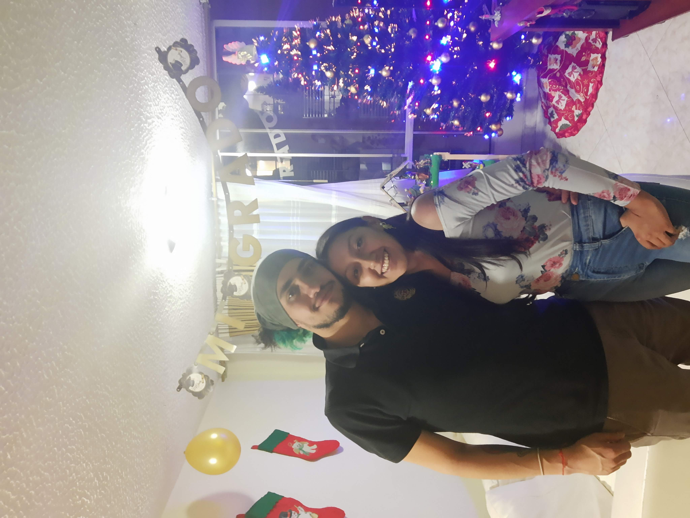

Synxará
¿Quienes somos?
Somos ingenieros colombianos 🙋🙋apasionados por el desarrollo sostenible y las energías renovables ⛺. Creamos contenido para dar visibilidad y ampliar el alcance del conocimiento ambiental.

¿Qué queremos?
Deseamos fomentar una cultura autosostenible, retomando conocimientos ancestrales y actualizándolos con nuevas tecnologías ecológicas 👨💻. Creemos que esta es la vía a una sociedad más sana y en contacto con la naturaleza, sin dejar de lado los avances científicos para reducir el consumismo desmesurado que va en detrimento de la vida en el planeta 🌱
Temas de interés
- Alimentación sostenible
- Bioconstrucción
- Cosmética natural
- Ecología
- Energía
- Gestión de residuos
- Objetivos de desarrollo sostenible
- Permacultura
- Población
- Prácticas agrícolas
- Reciclaje
- Uso de la tierra
- Vida sostenible